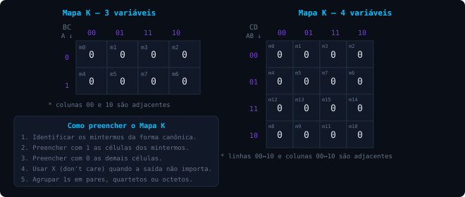

Sistemas Digitais · Ibmec RJ
Objetivos de aprendizagem
3.1 / formas canônicas
Toda expressão booleana possui uma expressão logicamente equivalente que pode ser escrita na forma de disjunção (soma) da conjunção (produto) de termos com todas as variáveis independentes.
Por exemplo, as funções abaixo são logicamente equivalentes (verificar na tabela-verdade):
A função $f_2$ está na forma soma de produtos — uma das duas formas canônicas das expressões booleanas.
mintermo
Termo que constitui a conjunção de todas as variáveis e determina resultado 1 para a função. Em $f_2$, os mintermos são $A.\bar{B}.C$, $A.B.\bar{C}$ e $A.B.C$.
Em se tratando de três variáveis (A, B, C), há no total $2^3 = 8$ combinações possíveis de produtos — mas nem todas determinam resultado 1, portanto nem todas são mintermos.
A segunda forma canônica, dual da soma de produtos, é o produto de somas — conjunção da disjunção de termos com todas as variáveis. Não será utilizada neste curso.
Pode-se obter a expressão equivalente na forma de soma de produtos de duas maneiras: aplicando os teoremas e axiomas da Álgebra Booleana, ou aplicando a tabela-verdade.
3.2 / projeto de circuitos combinacionais
⚠ Não garante a forma mínima da expressão — pode resultar em circuito com mais componentes que o necessário.
⚠ Nem sempre é simples inferir diretamente a expressão algébrica a partir do problema formulado.
3.3 / mapa de karnaugh
Método gráfico para simplificar expressões booleanas. O Mapa K compreende uma tabela com as variáveis de cada mintermo apresentadas nas linhas e colunas, rotuladas de modo a assegurar adjacência lógica entre células vizinhas.
regra de preenchimento
Cada célula do Mapa K é preenchida com 1 para os mintermos pertencentes à expressão na sua forma canônica.

Fig. 3.1 — Estrutura do Mapa K para 3 e 4 variáveis
💡 As colunas e linhas das extremidades são adjacentes entre si — é possível formar grupos com elas.
💡 As expressões mínimas são logicamente equivalentes, mas podem não ser únicas — dependem dos grupos constituídos.
Existem problemas em que não importa o valor da saída para certas condições de entrada — a condição don't care (indicada por X no Mapa K).
checkpoint
Uma função de 4 variáveis booleanas admite quantas combinações possíveis de entrada?
Qual é a principal limitação do Método 1 (interpretação direta) de projeto de circuitos?
No Mapa K, quando um X (don't care) deve ser incluído em um grupo de 1s?
referências e aprofundamento